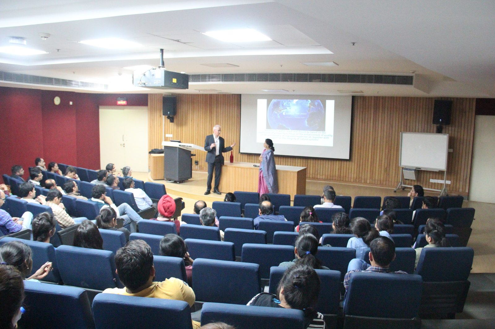
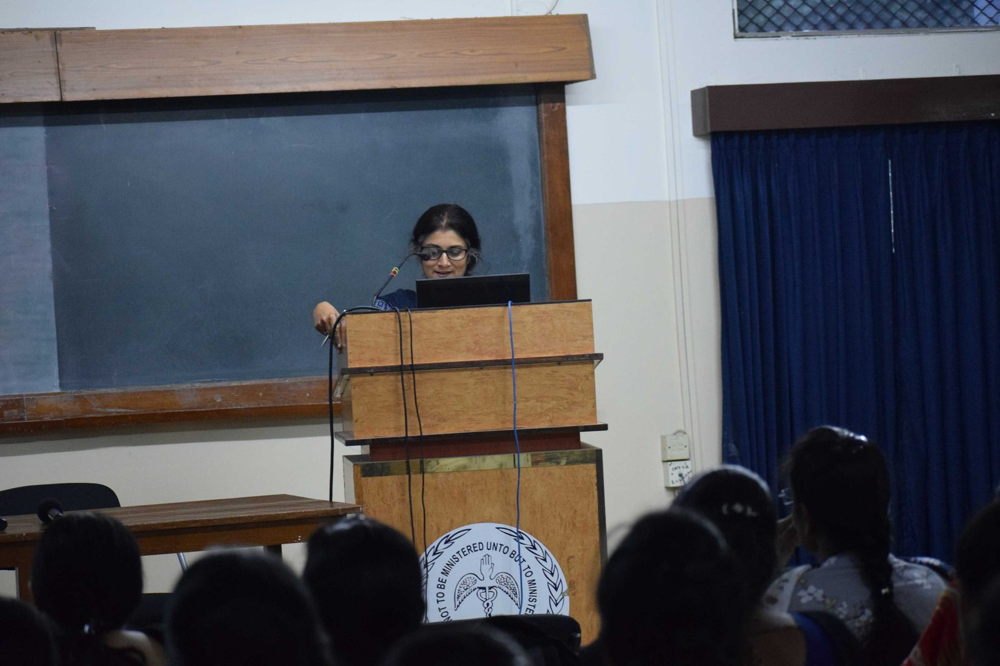
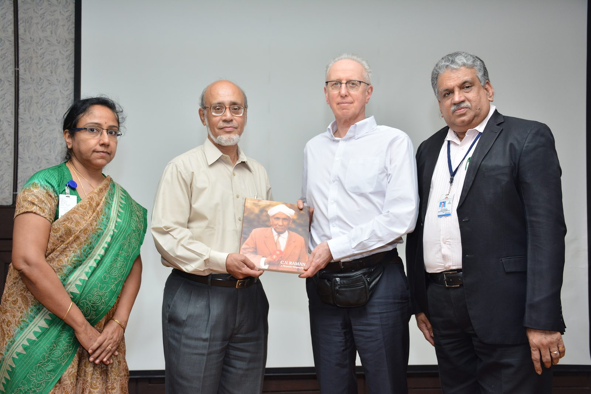
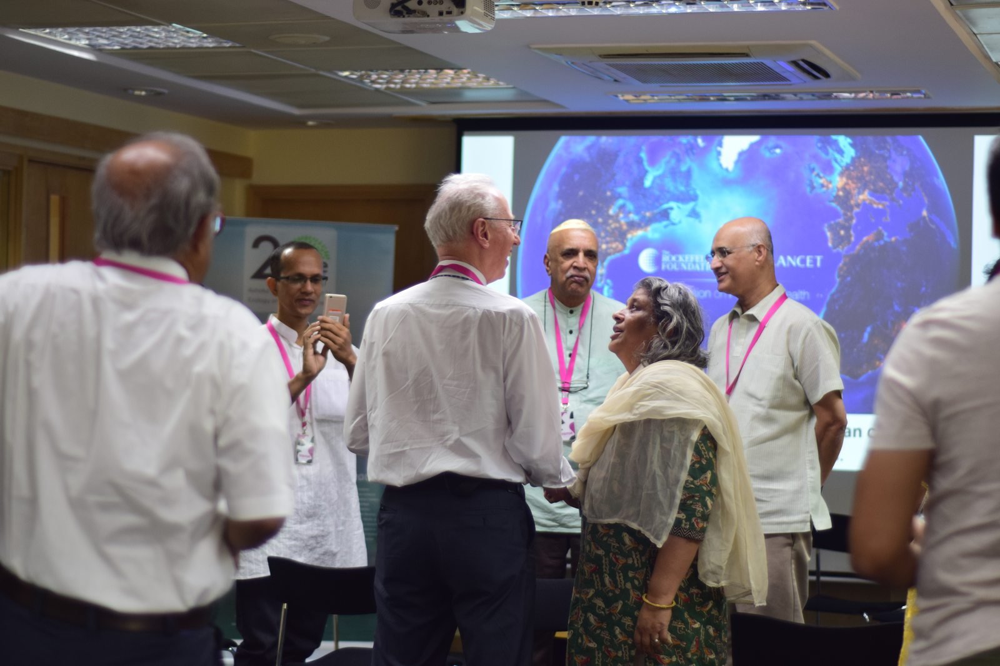

Endowment Chair · Springer-Nature
Chair Professorship
The Springer-Nature Chair brings a leading international scientist to India for a lecture tour at research institutions across multiple cities. Students and researchers at partner institutions attend the lectures and meet the Chair directly. Following the visit, the Chair contributes an article to an IAS journal co-published by Springer-Nature.
See past Chair Professors ↓Past Chair Professors
Prof. Frank Shu
Prof. Shu's research spans the birth and early evolution of stars, the structure of spiral galaxies, and the origin of meteorites. His December 2017 visit took him to eleven institutions across Bengaluru, Mumbai, Pune, and Delhi, where he gave talks on both fundamental astrophysics and the potential of thorium molten-salt reactors as a path to sustainable nuclear energy.
- IISc, Bengaluru
- Raman Research Institute, Bengaluru
- Nehru Centre, Mumbai
- TIFR, Mumbai
- BARC, Mumbai
- NCRA, Pune
- IUCAA, Pune
- Jamia Millia Islamia University, New Delhi
- RIS–India Habitat Centre, New Delhi
Prof. Sir Andy Haines
Professor of Environmental Change and Public Health, London School of Hygiene & Tropical Medicine
During his March 2019 visit, Professor Haines lectured on Planetary Health: Linkages between global environmental change and human health at seven institutions from Delhi to Bengaluru, making the case that climate change, deforestation, and biodiversity loss are now significant drivers of disease, and that India faces particular exposure to these risks.
- THSTI, Faridabad
- AIIMS, New Delhi
- Sri Ramachandra Medical College, Chennai
- JIPMER, Pondicherry
- Christian Medical College, Vellore
- St. John's National Academy of Health Sciences, Bengaluru
- The British Council, Bengaluru (with ATREE)



